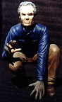

Here is the latest scoop from Creative Designs and Castings, Unlimited:

"INFESTATION", this 1:6 scale creation represents the epic battle
between HERO and MONSTER stuck in a life and death
struggle... Only one will win; many will die!!!
This highly detailed model kit includes 44 resin-cast
pieces and stands 10 inches tall when assembled. The
Xenomorph base measures 9" by 9" and is expertly crafted
to give an eeie depiction of extra-terrestial architecture.
The kit also comes with highly detalled instructions,
but is recommended for modelers with at least moderate
experience. You can order one today, but don't wait too long..
quantities are limited! The price is only $200 plus shipping.

"ENCOUNTER", a tribute to George Reeves is a 1:6 scale,
14 piece model figure kit featuring George Reeves as our
favorite hero and three mole men on a 14"X7" sidewalk
base. Complete with Inner Earth Weapon, "S" shield patch,
and cloth cape this is a model kit collectible you can not
afford to miss!! Each kit comes with detailed instructions
and is packaged with a certificate of authenticity to
validate its originality. The price is $200 plus $10 for
shipping and handling.
Also, for a limited time only,
this kit is avaliable fully assembled and painted, and
includes a cloth cape cut from the same raw silk material George
Reeves' cape was made from in the 1950's!! This is an exclusive
offer! The raw silk cape is only available to those purchasing
the professionally assembled build-up. Other bonuses include a
wooden base to display your art piece, a mini-poster of
the original one-sheet used to advertise the movie in an
acrylic case, ready to display with your piece, and a
certificate of authenticity!!! This is a combined
value of over $625... but for a limited time only, is
yours for only $450!! But don't delay...This offer
is limited to only 25 pieces!

From the newest cinematic interpretation of the Werewolf
mythos comes, "BIG BAD WOLF', a 1:4 scale, 5 piece resin
model kit. Just reduced in price, this kit now includes a
1:1 scale wolf's head medallion as seen in the film!!
Don't miss this last chance to get your paws on "Big
Bad Wolf"! Strictly limited to 50 castings, supplies
are going fast!! The price is $90 plus $10 shipping and
handling.

"The Extra-Terrestrial" is a 1:6 scale, 5 piece resin kit.
Detailed instructions and a signed and numbered certificate of
authenticity are included. The price is $75 plus shipping.
The Gremlins in the Garage webzine is a production of Firefly Design. If you have any questions or comments please get in touch.
Copyright © 1994-1997 Firefly Design.